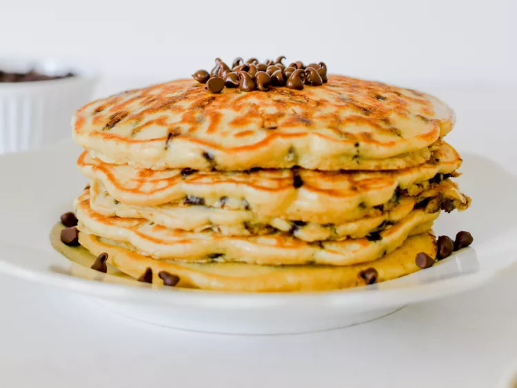

Sweet and irresistable chocolate chip pancakes. It's incredibly easy to make for your friends and family!

Delicious chocolate chip pancakes
Ingredients
¾ cup milk
2 tablespoons white vinegar
1 cup all-purpose flour
2 tablespoons white sugar
1 teaspoon baking powder
½ teaspoon baking soda
¼ teaspoon salt
1 large egg
2 tablespoons unsalted butter, melted
1 teaspoon vanilla extract
½ cup mini chocolate chips, or more to taste
cooking spray
Directions
To make the buttermilk: Combine milk and vinegar in a bowl and set aside for 5 minutes to sour the
milk.
Combine flour, sugar, baking powder, baking soda, and salt in a large mixing bowl.
Whisk egg, butter, and vanilla extract into buttermilk mixture until well combined; add flour
mixture
and whisk until just combined. Fold in chocolate chips. The pancake batter will be thick. Allow
batter
to rest for 5 minutes.
Heat a large skillet over medium-low heat, and coat with cooking spray.
Pour about ¼ cup of batter for each pancake onto the skillet. Cook until bubbles appear on the
surface,
2 to 4 minutes. Flip pancake with a spatula, and cook until browned on the other side, 2 to 3 more
minutes. Repeat with remaining batter. Serve immediately.